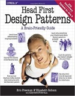
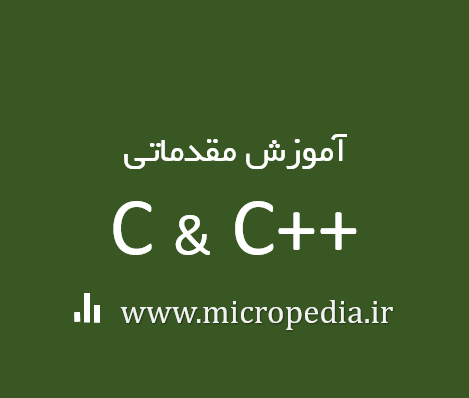
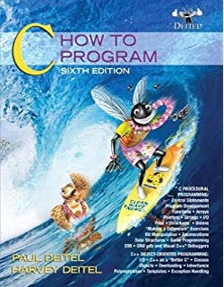
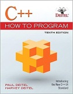
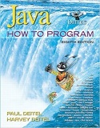
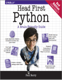
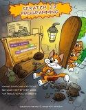
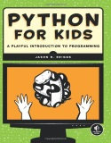
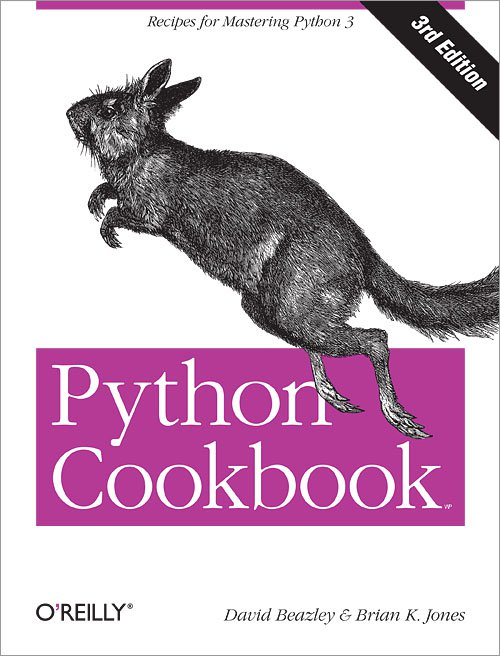

Resources
This page contains many related and useful links about computer programming and software engineering.
IUST course arsenal
This repository contains my notes, assignments, presentations, and projects for some graduate courses in computer science and artificial intelligence. In almost all of these courses, I was in the top three students among my classmates. I'm pleased to share these materials with all. Any feedback about them will be great. The IUST Graduate Course Arsenal provides a roadmap for graduate students who want to advance quickly and helps them to go one step forward toward discovering new topics and producing their original research. The repository will be publicly available until March 11, 2023.
Micropedia
From July 2013 my friends and I maintain Micropedia a free software engineering/ programming tutorials website in Persian. You can find some basic programming tutorials on Micropedia.
Have a programming question? Join us on Micropedia -:)
- Micropedia code group on the telegram or Contact with ID @mztel
- Micropedia programming tutorials (in Persian)
- Micropedia code repository
Machine learning and deep learning
- A survey of sequence-to-sequence learning with neural networks (in Persian) Fall 2017.
- Hacker's guide to neural networks by Dr. Andrej Karpathy
- IUST deep learning course by Dr. Mohammad Taher Pilehvar
- IUST Deep learning with google TensorFlow by Eng. Mahdizade
- Keras book, documentation and blog
Advanced software engineering
| Row | Photo | Resource name | Additional links |
|---|---|---|---|
| 1 | An introduction to Algorithms | ||
| 2 | Object oriented design and analysis | ||
| 3 |  |
Design patterns | A very good visualized book. |
| 4 | System design and analysis in software engineering (in Persian) | By Dr. Saeed Parsa (My doctoral advisor) | |
| 5 | Performance testing in software engineering (in Persian) | By Dr. Saeed Parsa (My doctoral advisor) |
Computer programming
A road-map to learn programming/ codding.
| Row | Photo | Resource name | Additional links |
|---|---|---|---|
| 1 |  |
Micropedia essential course on C and C++ (for beginners) | www.micropedia.ir |
| 2 |  |
C How to Program (Book by Harvey Deitel and Paul Deitel) | www.deitel.com |
| 3 |  |
C++ How to Program (Book by Harvey Deitel and Paul Deitel) | www.deitel.com |
| 4 |  |
JAVA How to Program (Book by Harvey Deitel and Paul Deitel) | www.deitel.com |
| 5 |  |
Head First Python: A Brain-Friendly Guide | www.oreilly.com |
Computer programming resources for children
| Row | Photo | Resource name | Additional links |
|---|---|---|---|
| 1 |  |
Scratch (MIT Media Lab) | www.scratch.mit.edu |
| 2 |  |
Python for Kids: A Playful Introduction to Programming | www.oreilly.com |
| 3 | Head First Python: A Brain-Friendly Guide | www.oreilly.com | |
| 4 |  |
Python Cookbook | www.oreilly.com |
Useful links
My profiles
- My GitHub projects [New]
- My GitHub projects [Old]
- My gist (code snip)
- My LinkedIn profile
- My SlideShare profile
Outdated
- My old blog Spring 2011
- Data and end of homelessness (in Persian) Spring 2019
- An introduction to NoSQL databases (in Persian) Fall 2016
Miscellaneous
Disclaimer
I do not guarantee the absence of scientific mistakes in the above materials and resources, but please let me know if you find any mistakes, copyright violations, and any other issues.